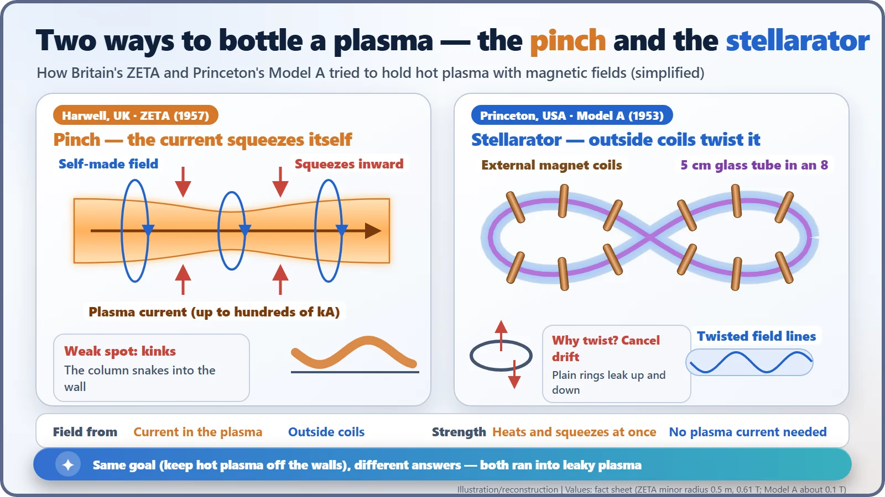
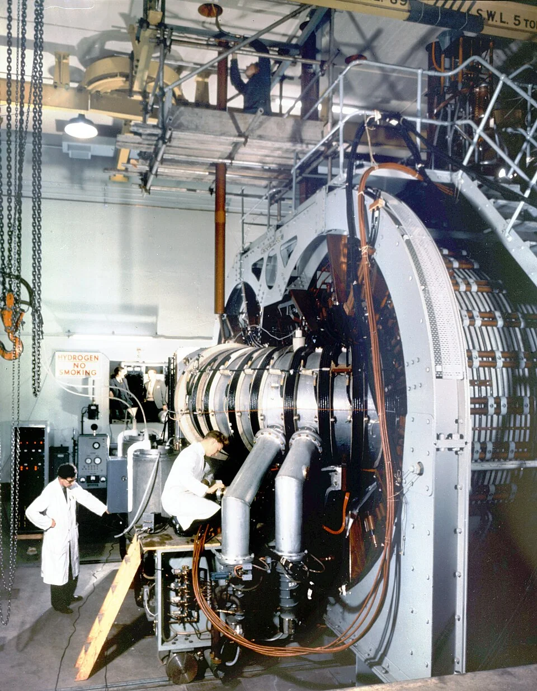
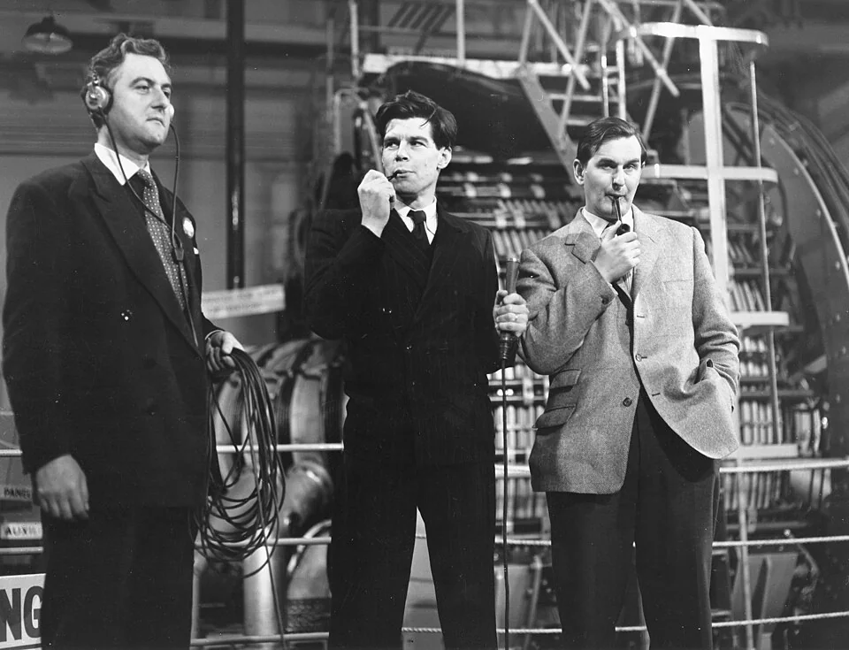
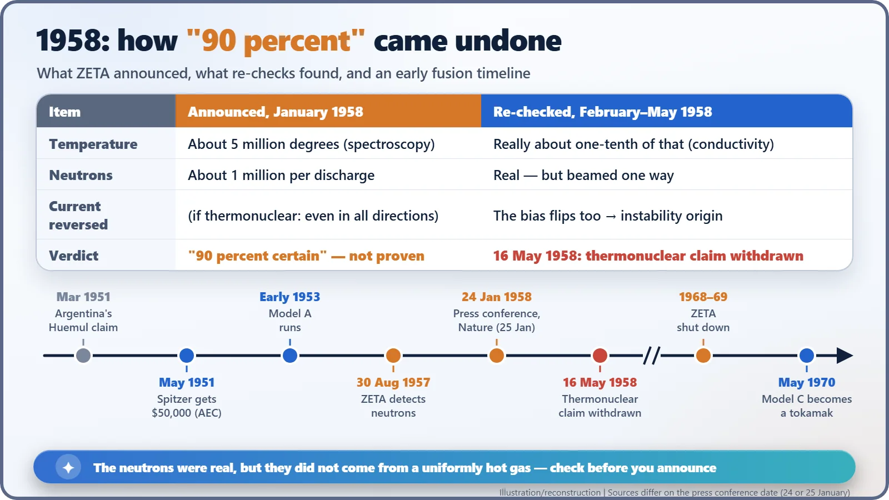

Nuclear History · 220
"Ninety Percent Sure" — ZETA, the Stellarator and the First Fusion Rush (1951–1958)
A twisted glass tube at Princeton, a million neutrons at Harwell, and a "90 percent" that came undone in four months.
In 1951 an astronomer at Princeton dreamed up the stellarator, a twisted magnetic bottle for fusion plasma. Six years later Britain's ZETA machine at Harwell detected neutrons, and in January 1958 its director said he was "90 percent certain" they came from fusion. By May the claim had been withdrawn. This is the story of the first fusion rush, and of why checking must come before announcing.
An idea on a ski lift
In late March 1951, Lyman Spitzer Jr. (1914–1997), an astronomer at Princeton University, was about to leave for a ski trip to Aspen, Colorado. Then a strange story hit the papers. On 24 March, Argentina's President Juan Perón had announced that a secret laboratory on an island in his country had carried out "thermonuclear experiments … under conditions of control" (an English rendering of his Spanish). Spitzer ran the numbers and shook his head: that set-up could never deliver enough energy to reach fusion temperatures. But one question stuck. If you really wanted to do it, how would you? According to a story based on Spitzer's own recollection, the answer came to him on a ski lift. [5]
What do you keep a 100-million-degree gas in?
Fusion releases energy by forcing two light nuclei together into one. The catch is temperature. Fuels such as deuterium (heavy hydrogen) only overcome their mutual repulsion at around 100 million degrees. At that point the gas is a plasma, and no material container could survive touching it.
So physicists reached for a magnetic bottle. Charged particles spiral along magnetic field lines, so if you bend the field lines into a ring, the particles can, in principle, circle forever. The snag is that a ring-shaped field is stronger on the inside than on the outside, and the particles slowly drift up or down until they hit the wall.
Spitzer's fix was to twist the ring into a figure eight. As the field lines twist round, a drift picked up on one side is cancelled on the other. He called the machine a stellarator, because it aimed to make the energy of the stars (stellar) here on Earth.
Project Matterhorn and a glass figure eight
In May 1951 the U.S. Atomic Energy Commission (AEC) gave Spitzer $50,000. Because high-energy neutrons from a fusion device could in principle be used to breed weapons material, the work was classified. The Princeton group was given the code name Project Matterhorn: the task, the story goes, looked as hard as climbing a mountain. In 1961 it became the Princeton Plasma Physics Laboratory (PPPL). [4]
The first machine, Model A, was started in 1952 and running by early 1953. It was a table-top device: Pyrex glass tubing 5 cm across and about 350 cm long, bent into a figure eight, with a magnetic field of about 0.1 tesla. It showed that the twisted shape held plasma better than a plain ring, and it led to the larger, stronger B series. [5]

Across the Atlantic: ZETA squeezes with current
Britain took another road. Drive a very large electric current through gas in a ring-shaped tube, and the magnetic field made by that current squeezes the plasma column inward. This is the pinch. It heats and compresses at the same time, but the squeezed column tends to wriggle like a snake and hit the wall, the so-called kink instability.
At the Atomic Energy Research Establishment at Harwell, work on a large pinch machine began in late 1954 with a budget of £200,000. It was named ZETA, the Zero Energy Thermonuclear Assembly, and was led by the Australian-born physicist Peter Thonemann (1917–2018). Its minor radius was 0.5 m, its magnetic field 0.61 tesla, and its plasma current reached hundreds of thousands of amperes. ZETA started up in mid-August 1957, and on the evening of 30 August a single deuterium discharge produced about a million neutrons. Neutrons are the calling card of deuterium fusion. Harwell was understandably excited. [3] [6]

"Ninety percent" in front of 400 reporters
Word began leaking out in September. About four months later, on 24 January 1958, Harwell's director Sir John Cockcroft (1897–1967) faced roughly 400 journalists. The headline figure was a plasma of about 5 million degrees. The next day Nature carried a paper by Thonemann and eleven colleagues. [1] [2]
Cockcroft was careful to say that the neutrons had not been "definitely proved" to come from fusion. Pressed again and again, though, he said he was 90 percent certain. On television he went further: "To Britain this discovery is greater than the Russian Sputnik." With the first Soviet satellite still fresh in everyone's mind, newspapers ran headlines like "The Mighty Zeta" and "Limitless Fuel for Millions of Years." The caveat vanished; the numbers stayed. [2]

Why did the neutrons all go one way?
Doubts poured in. Spitzer argued that such short discharges could not have produced those temperatures, and an analysis of the plasma's electrical conductivity by American researchers put the real temperature at about a tenth of the claim.
The decisive clue came from Harwell itself. In February and March 1958, Basil Rose measured which way the neutrons were travelling. They came out biased in one direction, and when the current was reversed, the bias flipped too. In a truly thermonuclear reaction, where the whole gas is uniformly hot, neutrons fly out evenly in all directions. ZETA's neutrons instead came from instabilities that flung a small number of ions to high speed. Fusion reactions did happen, but not the kind that could ever run a power station. On 16 May 1958, Cockcroft formally withdrew the thermonuclear claim. [6]
| Item | Announced, January 1958 | Re-checked, February–May 1958 |
|---|---|---|
| Plasma temperature | About 5 million degrees | About one-tenth of that (conductivity analysis) |
| Neutrons | About a million per discharge | Real, but biased in one direction |
| Current reversed | (Thermonuclear neutrons would be even in all directions) | The bias flips too: an instability origin |
| Verdict | "90 percent certain", not proven | Thermonuclear claim withdrawn, 16 May 1958 |

What the "failure" left behind
ZETA kept running until 1968 or 1969 (sources differ). It seeded a new idea, the reversed field pinch, and helped develop laser techniques for measuring plasma temperature. The stellarators, too, ran into "Bohm diffusion", plasma leaking out far faster than theory predicted, and in May 1970 Princeton's Model C reopened as a Soviet-style tokamak, the Symmetric Tokamak (ST). Yet the twisted-field idea survived: Germany's Wendelstein 7-X made its first plasma in 2015. [5] [3]
ZETA's mistake was not the machine. It was letting expectation run ahead of measurement. That memory of one winter's "ninety percent" is one reason fusion scientists are still famously cautious about announcing results.